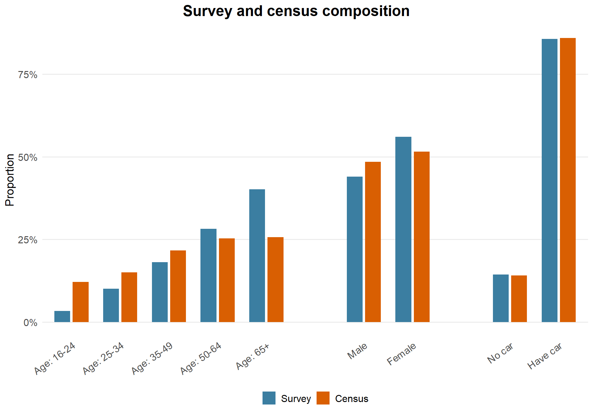

Outcome and Population: Share of adults who cycle frequently
Geography: MSOAs in Wales
Time: 2021, 2023, and 2025
Unit-level SAE with poststratification combines an unit-level model fitted to survey microdata with a poststratification table describing the target population. This is the core structure of Multilevel Regression with Poststratification (MRP): model predictions are averaged over population cells.
For this estimand, we model the binary frequent-cycling indicator freq_cyclist using age_band, sex, caraccess, and spatial and temporal random effects using a generalised linear mixed model. We then produce predicted cell means for each age_band x sex x caraccess population cell and aggregate them to MSOA-year estimates using population weights. Uncertainty is propagated by repeating this aggregation across posterior draws.
Here, the poststratification table is sourced from ONS UK Census 2021, giving the 2021 population count for each age_band x sex x caraccess cell in each MSOA. For the 2023 and 2025 estimands, the model can still estimate different area-time outcomes through the temporal and spatial terms, but the poststratification weights are held fixed. This assumes that local demographic and car-access composition does not change across the survey years. In other words, N_{jtc} = N_{jc,2021} for all three waves.
1 Prepare modelling and poststratification data
There are two inputs when performing unit-level SAE with poststratification:
poststrat_data, the population cells over which predictions are averaged.
model_data, the survey microdata used to fit the model.
It is essential for the unit-level predictors to be identical to the ones present in the poststratification table. Therefore, age is grouped into the same broad Census age bands and sex is also recoded as Male and Female.
Before fitting the model, we add the INLA time and area indices to the prepared datasets.
area_index <- domain_frame |>distinct(area_id, area_inla_id)time_index <- domain_frame |>distinct(time_id, time_inla_id)model_data <- model_data |>left_join(area_index, by ="area_id") |>left_join(time_index, by ="time_id") |>arrange(time_inla_id, area_inla_id)poststrat_data <- poststrat_data |>left_join(area_index, by ="area_id") |>left_join(time_index, by ="time_id") |>arrange(time_inla_id, area_inla_id, age_band, sex, caraccess)
2 Fit and evaluate models
We fit binomial unit-level models to the survey microdata, then use them to predict area-time means. We specify three unit-level models to evaluate at the next step:
Model fit is compared with WAIC as an initial check. The fixed-effect table reports the selected model’s predictor terms and gives a directional check on whether the modelled relationships align with expected cycling patterns.
As before, posterior draws from the selected INLA fit produce MSOA-year estimates. Each draw provides fixed effects, spatial area effects, and temporal effects. The fitted model is evaluated over every age_band x sex x caraccess population cell, transformed to the response scale, weighted by pop_count, and summarised as MSOA-year draws.
Note
Each posterior draw stores the fixed effects, spatial area effect, and temporal effect together in INLA’s latent vector. Fixed effects are labelled as term:1, while random effects are labelled as effect:index.
Each posterior draw is evaluated over every poststratification cell. The cell predictions are then weighted by population count and aggregated within each MSOA-year.
Why poststratification?
Unit-level SAE with poststratification improves on the previous area-summary approach in two ways.
First, the unit-level model is fitted to survey microdata, but the survey sample may not match the target population composition (see below figure). Poststratification partially adjusts this by predicting the outcome for known population groups and weighting those predictions by the corresponding population counts. This helps align the final estimates with the population structure (but only for the variables included in the poststratification table).

Second, for binary outcomes such as freq_cyclist (1 = yes, 0 = no), the target is the population proportion in each area. Poststratification estimates this adequately by averaging predicted probabilities across population cells, rather than plugging a single set of area-level predictor summaries into the model.
prediction_matrix <-model.matrix(~ age_band + sex + caraccess,data = poststrat_data)[, fixed_terms, drop =FALSE]cell_draws <-sapply(seq_along(posterior_draws), \(draw_id) { cell_predictions <-as.numeric(prediction_matrix %*% fixed_draws[, draw_id]) + area_draws[as.character(poststrat_data$area_inla_id), draw_id] + time_draws[as.character(poststrat_data$time_inla_id), draw_id]# Convert log-odds to probabilities.plogis(cell_predictions)})# Aggregate and apply poststrat weight for each area-timearea_year_id <-paste(poststrat_data$area_id, poststrat_data$time_id, sep ="__")aggregate_draws <-function(draw_matrix, weights, group) { weighted_sums <-rowsum(draw_matrix * weights, group = group, reorder =FALSE) population_totals <-rowsum(weights, group = group, reorder =FALSE) weighted_sums /as.numeric(population_totals)}prediction_draws <-aggregate_draws(draw_matrix = cell_draws,weights = poststrat_data$pop_count,group = area_year_id)
The matrix prediction_draws now has one MSOA-year estimate per row and one posterior draw per column. Posterior means, variances, and 95% credible intervals are computed directly from this draw matrix.
These estimates reuse the 2021 age-sex-caraccess population composition for the 2023 and 2025 waves, while the modelled time effect captures changes in the outcome. This requires the relative age_band x sex x caraccess poststratification weights to stay stable across target periods.
4 Appendix: Enhance shallow poststratification with contextual predictors
Sometimes the population table is available for every target year but only at a shallow cell grain. ONS mid-year population estimates can give MSOA-year counts by age_band and sex, but not by caraccess. In that setting, poststratification can still be used, but only for unit-level predictors represented in the population table.
Contextual predictors can explain between-area or between-year variation, but they do not describe respondent composition within an MSOA. They cannot represent how cycling behaviour differs between adults with and without car access inside the same age-sex cell.
area_context_predictors <-read_csv(file.path(base_path, "clean", "areapred_freqcyc.csv"),show_col_types =FALSE) |>select(area_id, pop_density, caraccess_adult_share) |>mutate(across(c(pop_density, caraccess_adult_share),~as.numeric(scale(.x)),.names ="z_{.col}" ) )shallow_model_data <- shallow_model_data |>left_join(area_context_predictors, by ="area_id") |>left_join(area_index, by ="area_id") |>left_join(time_index, by ="time_id") |>drop_na( freq_cyclist, age_band, sex, z_pop_density, z_caraccess_adult_share, area_inla_id, time_inla_id ) |>arrange(time_inla_id, area_inla_id)shallow_poststrat_data <- shallow_poststrat_data |>left_join(area_context_predictors, by ="area_id") |>left_join(area_index, by ="area_id") |>left_join(time_index, by ="time_id") |>drop_na( age_band, sex, z_pop_density, z_caraccess_adult_share, area_inla_id, time_inla_id ) |>arrange(time_inla_id, area_inla_id, age_band, sex)
In the modelling step, the model specification uses age_band and sex as the poststratification-cell predictors, and adds the contextual area predictors directly as fixed effect terms.
The WAIC comparison suggests that contextual predictors add less to model performance than the richer specification with the unit-level car-access predictor. When survey microdata and poststratification data are available at compatible predictor grains, the richer specification is preferred.
The shallow poststratification step uses the same posterior-draw workflow, but weights fitted cell predictions only by the age-sex population counts for each MSOA-year.
Compared with the richer three-predictor poststratified model, the local differences show whether estimates are driven more by detailed population composition or broader area context. The shallow model may raise estimates in areas where contextual predictors suggest favourable cycling conditions (e.g., high population density), while the rich model may lower them if the poststratification cells contain more residents with car access than the area-level car-ownership contextual predictor implies.